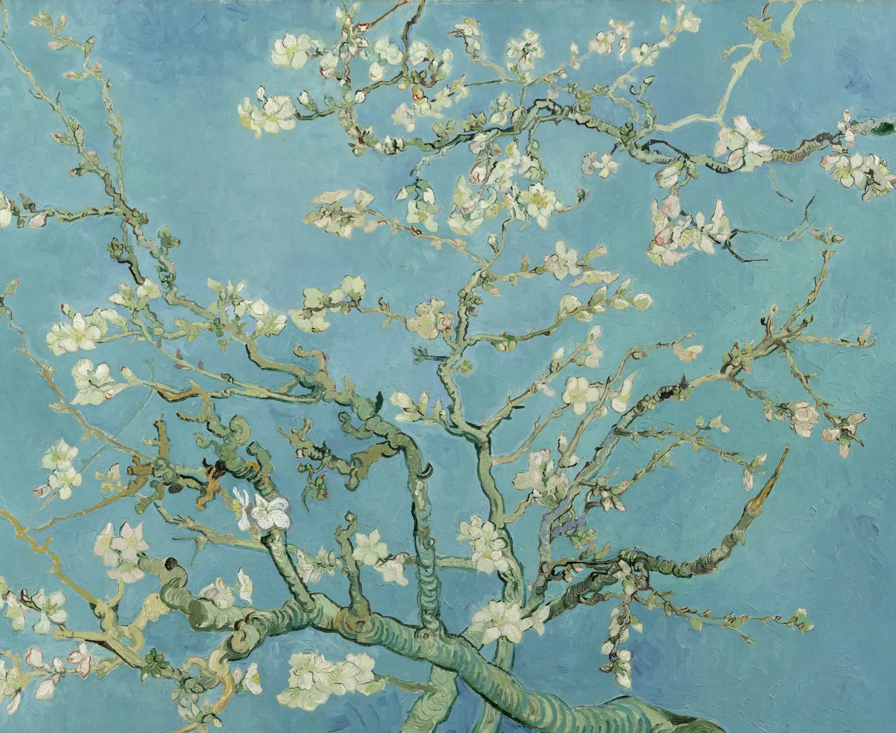

Guilherme Candeias Martins
Electrical and Computer Engineer · MSc Electrical Engineering (Microelectronics, quantum themed), TU Delft
I'm an electrical engineer doing an MSc in Microelectronics at TU Delft, on a quantum-themed track. Before Delft, I spent a year testing and characterizing power-management chips in a semiconductor lab in Lisbon. I'm interested in where hardware, physics and computation meet.

Highlights
A year in semiconductor test.
About 1,500 hours of hands-on lab work in the Test & Laboratory team at SiliconGate and Celera Semiconductor: validating power-management IP, automating test setups and writing Python instrument drivers.
See my experienceA quantum-themed MSc at TU Delft.
MSc in Electrical Engineering on the Microelectronics track, with courses such as Semiconductor Devices and Circuits for Quantum and Superconducting Quantum Sensors for Astronomy.
See my educationVolunteering since 2021.
Volunteer tutor to about 15 children, and a volunteer with Cascais Jovem at community events, a beach-safety campaign and national elections.
More about me
Let's talk
If you have an internship, a thesis project, a student role or a research idea in microelectronics, semiconductor test or quantum hardware, I'd be glad to hear from you.